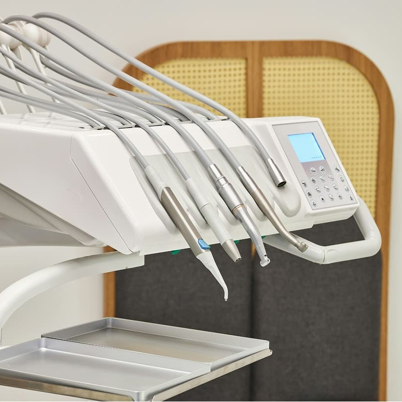
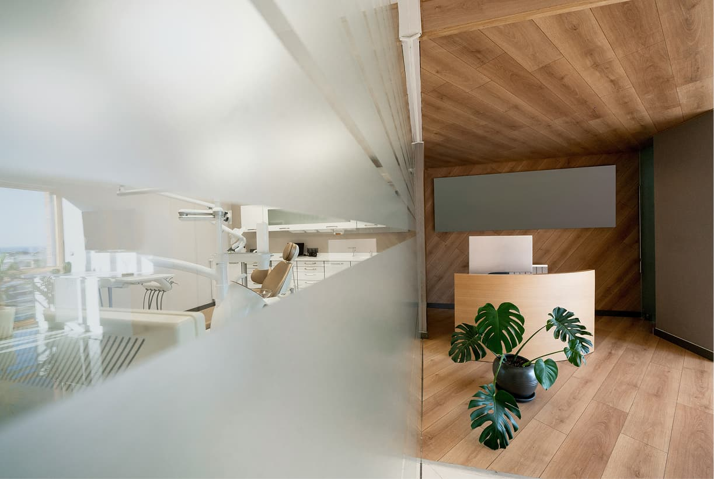
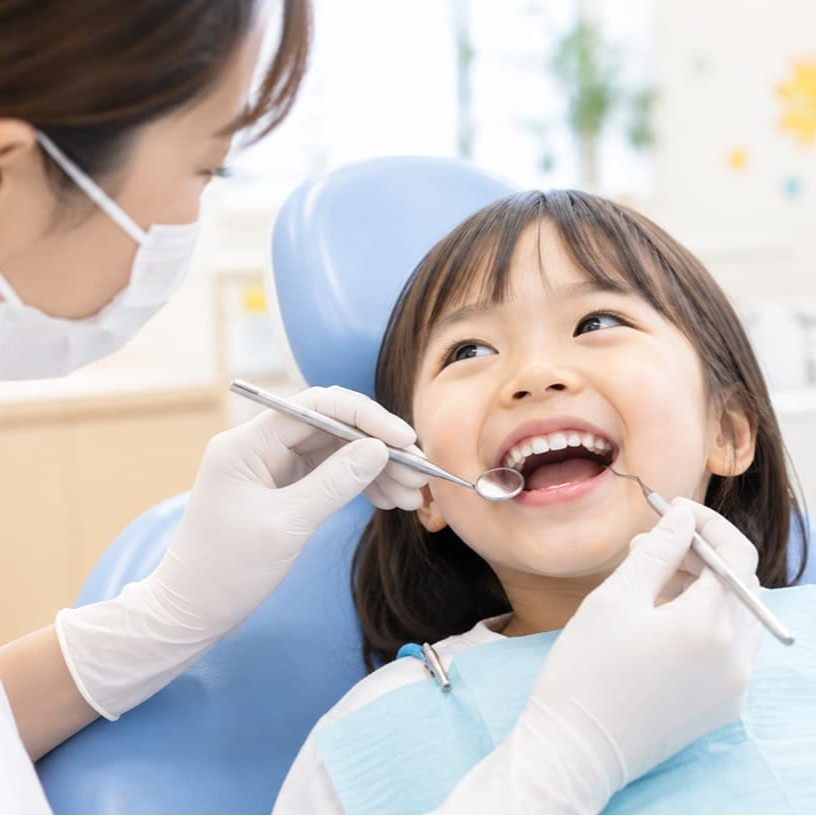
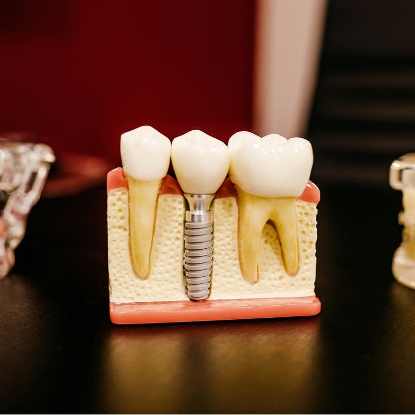
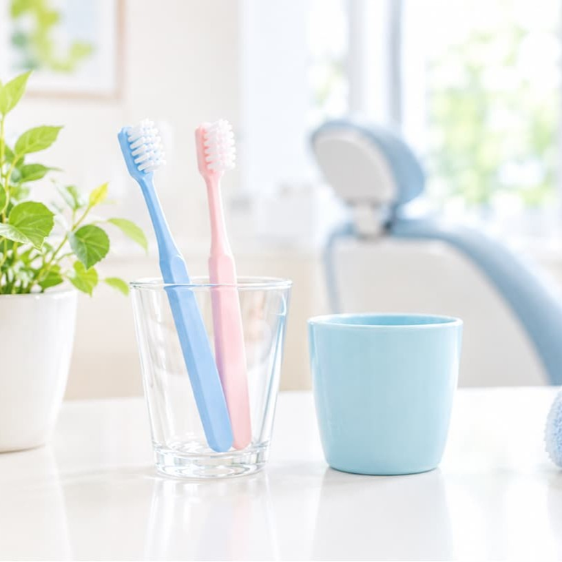

一般歯科
むし歯や歯周病の治療を行い、患者さんの健康な歯を守るための基本的なケアを提供します。痛みを抑えた治療を心がけ、できるだけ歯を残す治療を大切にしています。
- むし歯の治療・詰め物・かぶせ物
- 歯周病の治療・歯石除去
- 神経の治療（根管治療）

さわやか歯科クリニックでは幅広い治療を行っております。
歯やお口のお悩みがある方はお気軽にご相談ください。

むし歯や歯周病の治療を行い、患者さんの健康な歯を守るための基本的なケアを提供します。痛みを抑えた治療を心がけ、できるだけ歯を残す治療を大切にしています。

お子さまの歯の健康を守るために、むし歯の予防と治療を中心に、楽しく通える診療を目指しています。初めての歯医者さんでも安心できるよう、やさしく丁寧な対応を心がけています。

親知らずの抜歯や顎関節症など、お口の中の外科的な治療を専門的に行います。痛みや腫れの少ない治療を心がけ、患者さん一人ひとりに合わせた適切な治療を提供します。

「痛くなってから行く」のではなく、むし歯や歯周病を防ぐことを目的とした診療です。定期的な検診とクリーニングで、お口の健康を長く保ちましょう。
その他、口腔に関するお悩みや気になることがございましたら、
ぜひ一度お気軽にご相談ください。